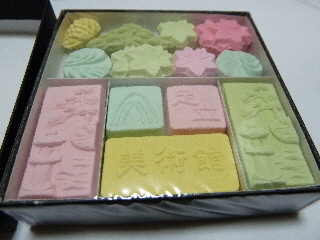

足立美術館のお土産です。
2013/04/02
立派な箱に入ってて、なんだかおめでたい感じの商品です。
砂糖のお菓子ですね。

お茶と一緒に飲むといいんでしょうけど、普段家でお茶飲まないので、コーヒーといっしょにいただきました。
なんとなーく角砂糖を思い出しました。
島根県安来市古川町320
2013/04/02
立派な箱に入ってて、なんだかおめでたい感じの商品です。
砂糖のお菓子ですね。

お茶と一緒に飲むといいんでしょうけど、普段家でお茶飲まないので、コーヒーといっしょにいただきました。
なんとなーく角砂糖を思い出しました。